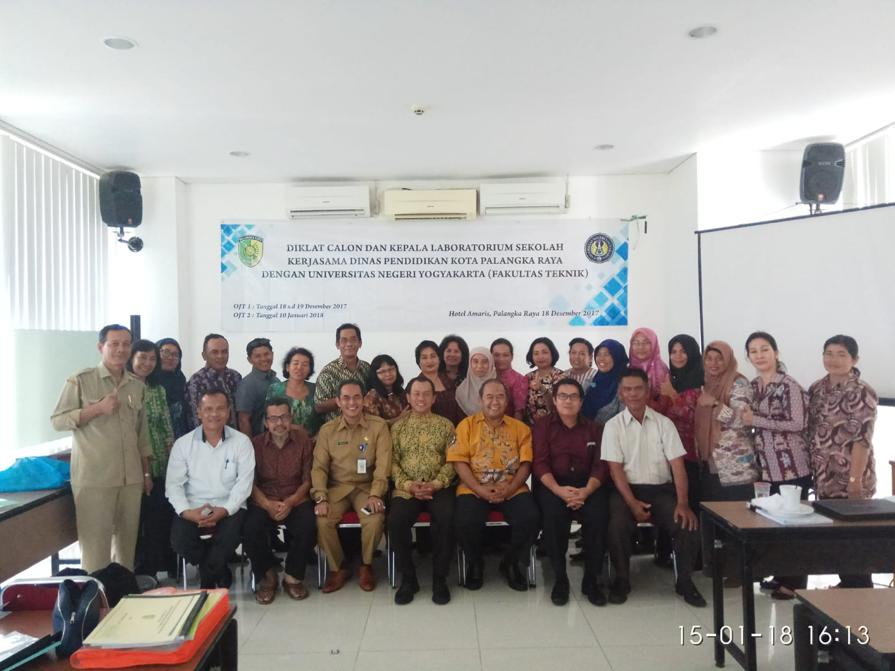
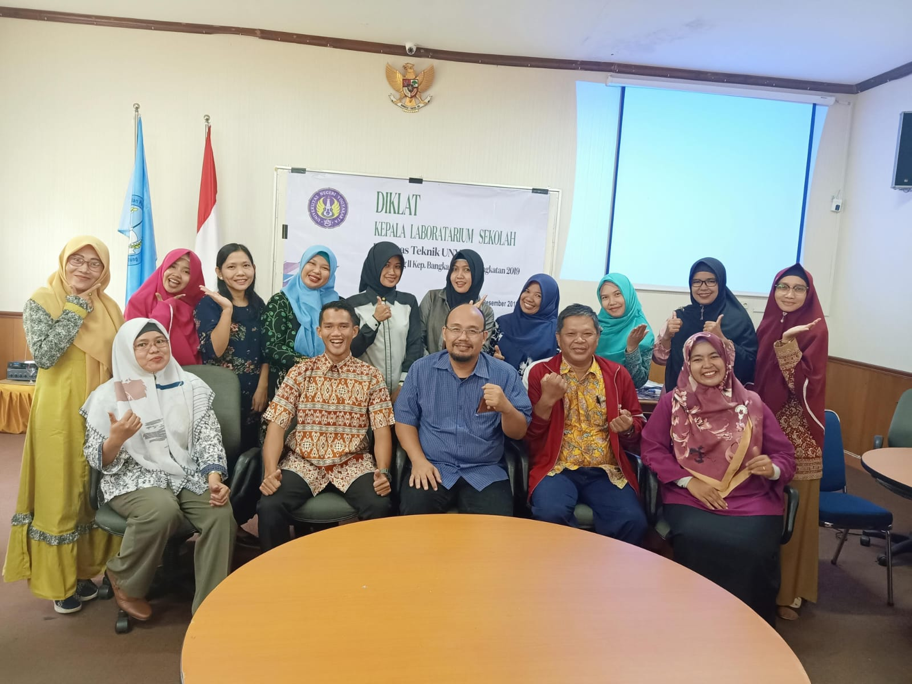

01
Kepribadian
Mendukung pengembangan sikap dan tanggung jawab profesional dalam menjalankan peran kepala laboratorium.
Angkatan September 2026
“Menguatkan Peran Strategis Lab untuk Pembelajaran Bermutu”
Program pengembangan kompetensi untuk calon dan Kepala Laboratorium Sekolah dalam mengelola laboratorium secara efektif, profesional, aman, dan mendukung pembelajaran bermutu.

Diklat Kepala Laboratorium Sekolah dirancang sebagai program pelatihan untuk meningkatkan kompetensi calon dan kepala laboratorium sekolah dalam mengelola, mengembangkan, dan mengoptimalkan laboratorium sebagai sarana pembelajaran.
Program ini memadukan pembekalan pengetahuan dan pengalaman praktis agar peserta memahami peran strategis laboratorium dalam mendukung peningkatan mutu pendidikan.

Kompetensi yang menjadi tujuan program berdasarkan informasi publikasi Diklat.
Mendukung pengembangan sikap dan tanggung jawab profesional dalam menjalankan peran kepala laboratorium.
Menguatkan kemampuan berkomunikasi dan membangun kolaborasi dalam lingkungan sekolah.
Membekali pengelolaan administrasi laboratorium secara tertib dan terarah.
Mengembangkan kemampuan pengelolaan laboratorium yang mendukung pembelajaran bermutu.
Narasumber Diklat
Narasumber Diklat
Narasumber Diklat
Narasumber Diklat
Terbuka hingga 25 September 2026.
Direncanakan mulai 27 September 2026.
Peserta memperoleh Sertifikat Kepala Laboratorium Sekolah sesuai ketentuan program.
Pendaftaran dilakukan secara online. Pastikan data yang diisi sesuai dan ikuti informasi dari penyelenggara.
Dokumentasi kegiatan Diklat Kepala Laboratorium Sekolah yang tersedia.
Hubungi admin penyelenggara untuk informasi terkait pendaftaran, pelaksanaan, dan ketentuan Diklat.